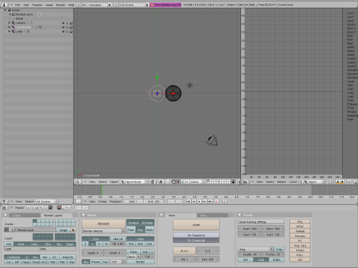
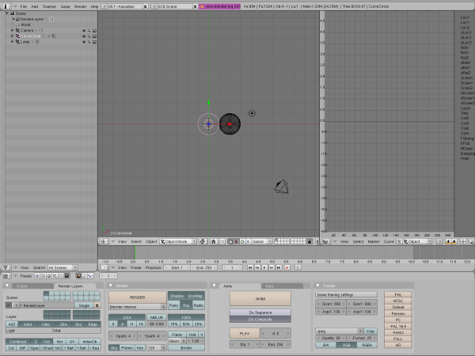
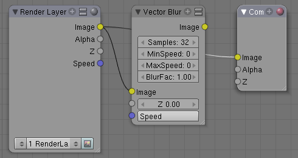
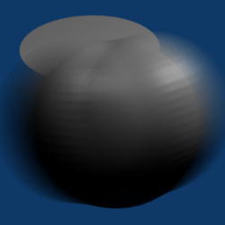

点击SR:2-Model，然后改变它为1-Animation。

按下F10到场景按钮
点击Render Layers选项
点击Vec

点击Anim选项卡中的Do Composite
点击RMB来只选择Bezier Circle

按下F9
改变PathLen:从100到10
在Blender中有两种方式来完成模糊：Vector Blur和Motion Blur
运动中的对象。
Blender模糊。计算对象在第一和最后一个场景中的模糊。
渲染帧。合并每一个帧到最后的图片。
设置
运动下的对象
点击SR:2-Model，然后改变它为1-Animation。
按下F10到场景按钮
点击Render Layers选项
点击Vec
点击Anim选项卡中的Do Composite
点击RMB来只选择Bezier Circle

按下F9
改变PathLen:从100到10
Blender模糊
改变Window Type从Buttons Window到Node Editor

点击Composite Nodes图标：
点击Use Nodes
Add>Filter>Vector Blur
滚动Node Editor窗口，那么所有的项目都是可见的

将Vector Blur面板放在Render Layer和Composite之间

连接Image到Image，Z到Z，以及Speed到Speed。
连接Image到Image（从Vector Blur到Composite）

点击play图标，看完UVsphere振动后按ESC
渲染
按F12来渲染

在动画时Vector Blur是Motion Blur的一个很好的替代品。这是因为任何单一的包括模糊的动画帧会显示为几分之一秒。